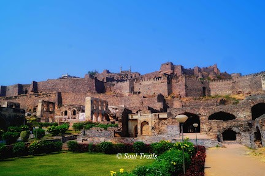

Historical Timeline
1591

Foundation of Hyderabad by Muhammad Quli Qutb Shah. Construction of Charminar marks the city's birth.
1724

Beginning of the Asaf Jahi dynasty (Nizams), marking Hyderabad's golden age of cultural synthesis.

Golconda Fort
Ancient fortress known for its acoustic features and diamond trade history.

Chowmahalla Palace
Official residence of the Nizams, showcasing Persian, European, and Indian architecture.